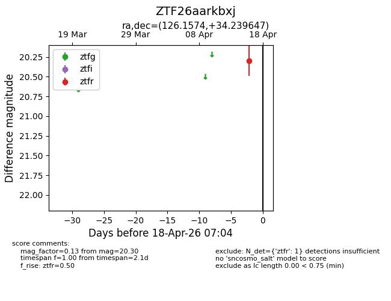
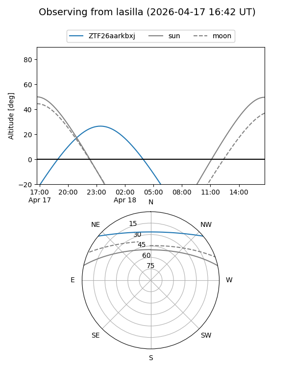
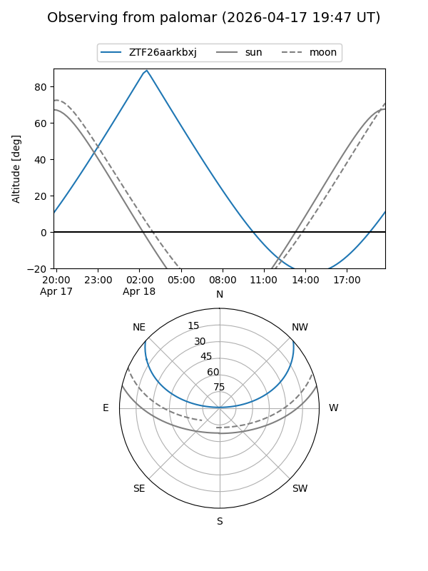

ZTF26aarkbxj
Target ZTF26aarkbxj at 2026-04-18 07:09
Aliases and brokers:
FINK: link
Lasair: link
ALeRCE: link
alt names
ZTF26aarkbxj (ztf,fink_ztf)
Coordinates:
equatorial (ra, dec) = 126.1574,+34.23965
equatorial (HMS+DMS) = 08:24:37.78,+34:14:22.73
galactic (l, b) = (188.0805,+33.19967)
Flags:
Photometry:
last ztfr=20.30
1 ztfr detections
Lightcurve

Visibility


Additional plots